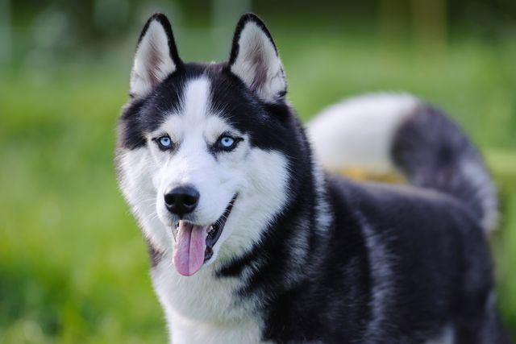

About Luna
Luna is a stunning Siberian Husky with piercing blue eyes and endless energy. She loves running, playing, and going on adventures. Luna is vocal and will "talk" to you with adorable howls. She needs an active owner who understands the Husky breed.
Personality
- Energetic
- Playful
- Vocal
- Independent
- Adventurous
Health
- Vaccinated
- Spayed
- Microchipped
- No health issues
Preferences
- Loves cold weather
- Enjoys dog sports
- Good with other dogs
- Loves to dig
Requirements
- Secure fenced yard
- Very active household
- Experience with Huskies
- No small pets (high prey drive)
Luna's Story
Luna was found as a stray and never claimed. She's been with us for 4 months while we worked on her training. Luna knows basic commands but will test boundaries (typical Husky!). She would excel at dog sports like agility or mushing. Luna needs a dedicated owner who can provide structure and plenty of exercise.
Start Adoption Application